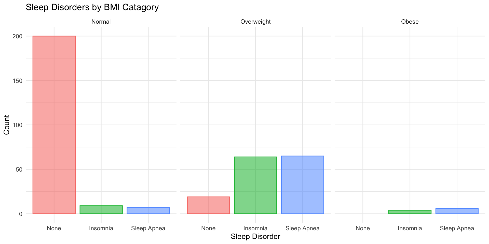
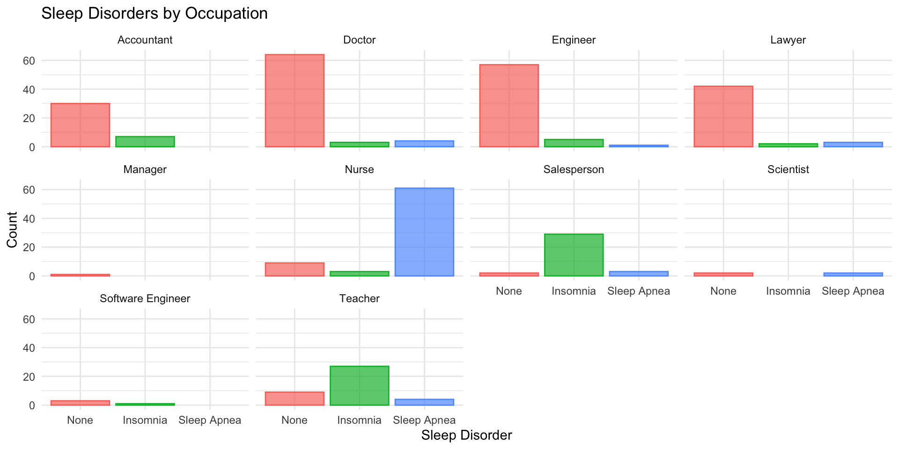
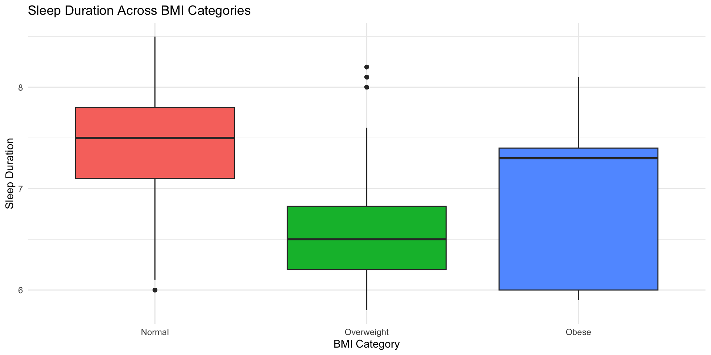

How lifestyle and health factors influence sleep duration and quality
Data: Sleep Health and Lifestyle Dataset via Kaggle
Variables:
Demographic
Sleep Metrics
Health Indicators
How do lifestyle and health factors such as occupation, physical activity, stress level, BMI category, and sleep disorders affect sleep duration and sleep quality?



Key Findings
Higher stress levels are associated with lower sleep duration across occupations
Overweight individuals report more sleep disorders, especially insomnia and sleep apnea
Sleep duration tends to decline as BMI increases
Obese individuals show the greatest variation in sleep duration
What causes stress in certain occupations?
Why do certain occupations have increased sleep disorder rates?